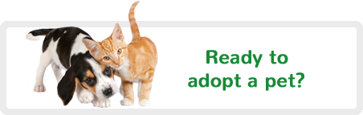

Have you heard the latest catch-phrase, “Adopt, Don’t Shop?” If so, you might be wondering what it means. Adopt, Don’t Shop is a campaign slogan that a growing number of animal rights proponents are using to promote adopting pets from shelters, rather than buying them from pet stores. What’s behind the movement? Is it controversial? And how can you get involved? We are here to convice you to adopt and not to shop and to provide you with the right facts.
Bringing home a new pet is incredibly exciting. And adopting a pet from a shelter or rescue group is not only exciting, but it’s truly a feel-good experience as well. Every day, more than 4,100 dogs and cats are killed in America’s shelters simply because they don’t have safe places to call home. By adopting, it means that each time you look into your pet’s eyes, you can feel good knowing that you truly did save a life.
